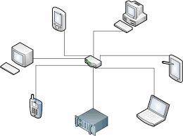
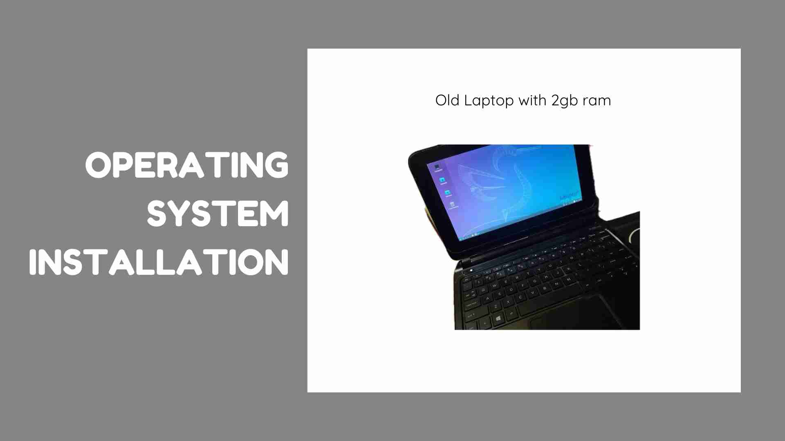
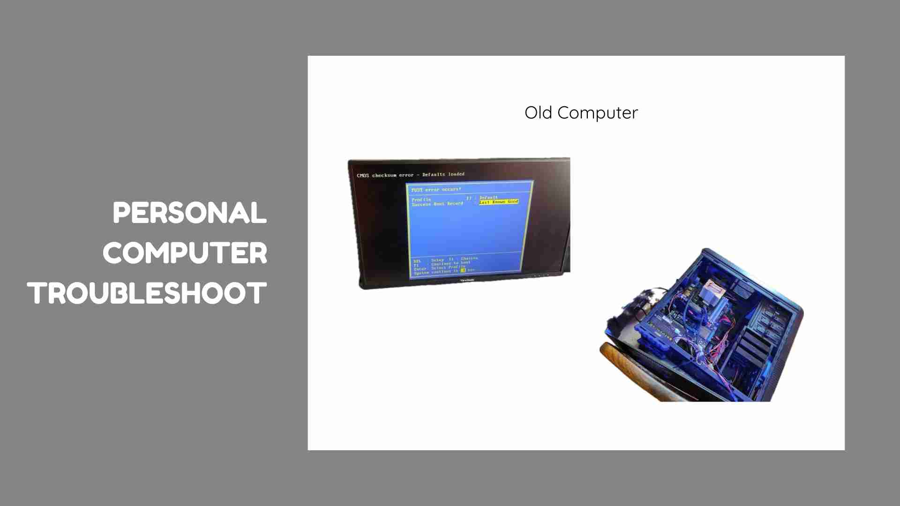
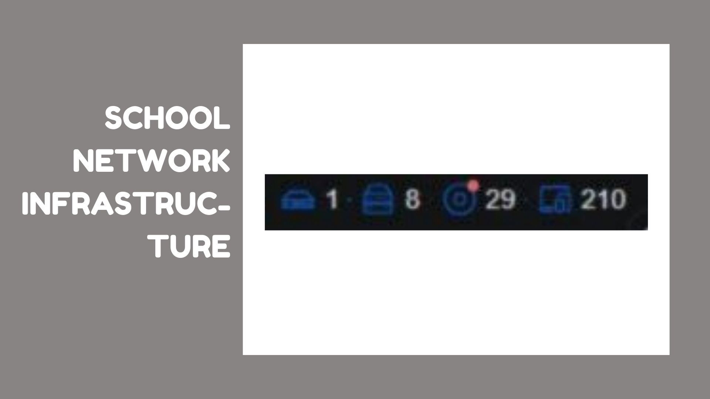

Explore various system and network setups.

OS Installation Using Lubuntu for a Lightweight System on an Old Laptop That Can't Support Additional RAM.

PC Troubleshooting Due to Faulty RAM

School Network Infrastructure Overhaul: Solved Long-Term Connectivity Issues, Configured VLANs, Managed 31 APs, 8 Switches, 1 Router, and Repaired 25+ IP CCTV Cameras for Reliable Network Performance.